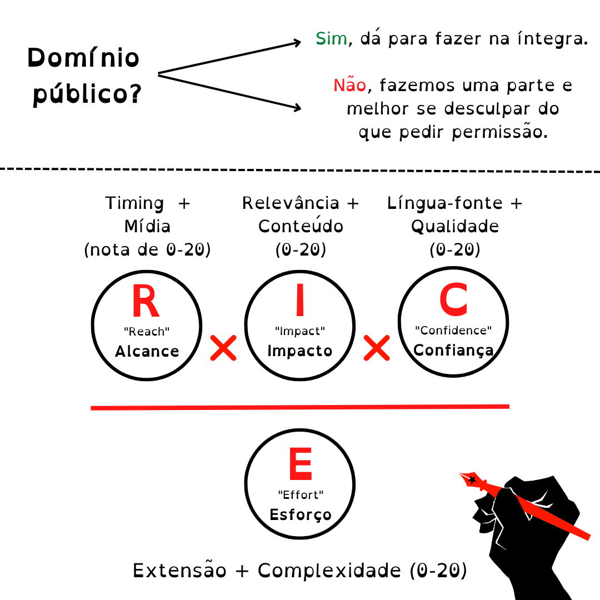

Como
posso ajudar a Guilda?
Como
posso ajudar a Guilda?
Existem várias maneiras: transcrevendo, traduzindo, revisando, temporizando legendas,
administrando as redes sociais,
gerenciando projetos, organizando oficinas, escrevendo atas de reuniões, criando conteúdo gráfico,
sugerindo projetos à
curadoria, ajudando na manutenção do nosso GitHub e do nosso site e, claro, divulgando nosso trabalho.
Você pode saber mais sobre essas funções no nosso site ou perguntando aos membros da GTRR. No mais,
aquele velho ditado
se aplica: muito ajuda quem não atrapalha. Ter educação e paciência com os membros da GTRR enquanto
respeita nossas
políticas tanto em nossos projetos quanto em nosso espaço dentro da Soberana já é muito útil para nós.
Como
me inscrever nos projetos?
Anunciamos os projetos no nosso tópico no servidor da Soberana e nas reuniões, e fazemos o recrutamento para outras funções (ex. curadoria, comunicações). Fique atento ao chat e compareça às reuniões que você terá mais chances de pegar um projeto. Além disso, para a inscrição em qualquer projeto ou função administrativa, é fundamental o cadastro nos nossos formulários de inscrição para camaradas (contribuintes) e membros (contribuintes com poder em decisões internas).
Posso
ajudar se não souber um segundo idioma?
Sim! Algumas funções que não precisam de segundo idioma são a de transcritor (áudio em pt-br -> texto em pt-br), a de revisor de tradução para o português (mas exigimos que a pessoa seja minimamente experiente com cotejo) e funções administrativas como comunicação e TI.
Não
tenho PC. O que posso fazer pelo celular?
Revisão, transcrição, administração de redes sociais e comunicação são tarefas que não necessitam de computador para serem realizadas, apesar de normalmente serem facilitadas por ele.
Quais
ferramentas a Guilda utiliza?
A Guilda tem a política de usar softwares de código aberto (open source) como uma afirmação política e
pela ampla
disponibilidade dos mesmos.
Para a transcrição, costumamos realizá-la em arquivo .txt porque ela é mais compatível com os softwares
de legendagem.
Aceitamos o uso de qualquer aplicativo ou programa não pirateado que suporte esse formato.
Quanto à legendagem, costumamos usar o Aegisub por sua simplicidade e por termos membros
experientes ne.
Inclusive,
realizamos oficinas de legendagem com o Aegisub, nas quais o nosso manual de legendagem é baseado.
Apesar disso, outros
programas de legendagem com código aberto podem ser utilizados – desde que isso seja acordado com seu
revisor e seus
colegas de tradução.
Quanto à tradução, usamos sempre o OmegaT, pois ele é o melhor para a função em código aberto. O uso do
OmegaT para
trabalhos de tradução é inegociável. Também oferecemos oficinas sobre esse software.
Por fim, salvamos nossa memória de tradução através do GitHub e pedimos que os tradutores evitem usar
inteligência
artificial/machine translation, pois a Guilda prioriza o caráter formativo e a qualidade sobre uma
suposta rapidez.
Como
funciona o processo de curadoria?
Resumidamente, os projetos podem ser sugeridos à curadoria através deste formulário.
A curadoria analisa e dá uma nota
para a sugestão baseando-se em fatores como tipo de mídia, qualidade, complexidade e extensão do
material. Caso o projeto tenha uma boa nota em relação aos demais, recrutamos um gerente de projeto
dentro do nosso
núcleo mais engajado e abrimos as inscrições para as funções necessárias. Saiba mais em Curadoria.

Sou
neurodivergente, acham que eu terei dificuldade em participar?
De forma alguma. Na verdade, os neurotípicos são minoria aqui. Nos esforçamos sempre para criar um ambiente inclusivo e acolhedor, com foco na qualidade sobre a produtividade. Mas isso vai do seu critério, possibilidade e conforto, é claro.
Por
que estamos na Soberana?
A nossa ligação com a Soberana se iniciou por causa de certo alinhamento quanto a conteúdos e parcerias,
demonstrando a
nossa amizade e boa convivência. Isso se consolida com a liberação do espaço no servidor deles para que
possamos expor
nosso trabalho e conseguir mais camaradas para contribuir conosco.
Continuamos sempre independentes, de forma que os projetos são organizados em nosso servidor dedicado.
Ainda assim,
esperamos que essa parceria entre a GTRR e a Soberana seja duradoura, frutífera e cada vez maior. Dessa
forma, contamos
com você para manter o nosso canal lá no servidor da Soberana saudável, focado e cooperativo, sempre
respeitando as
regras próprias do espaço.